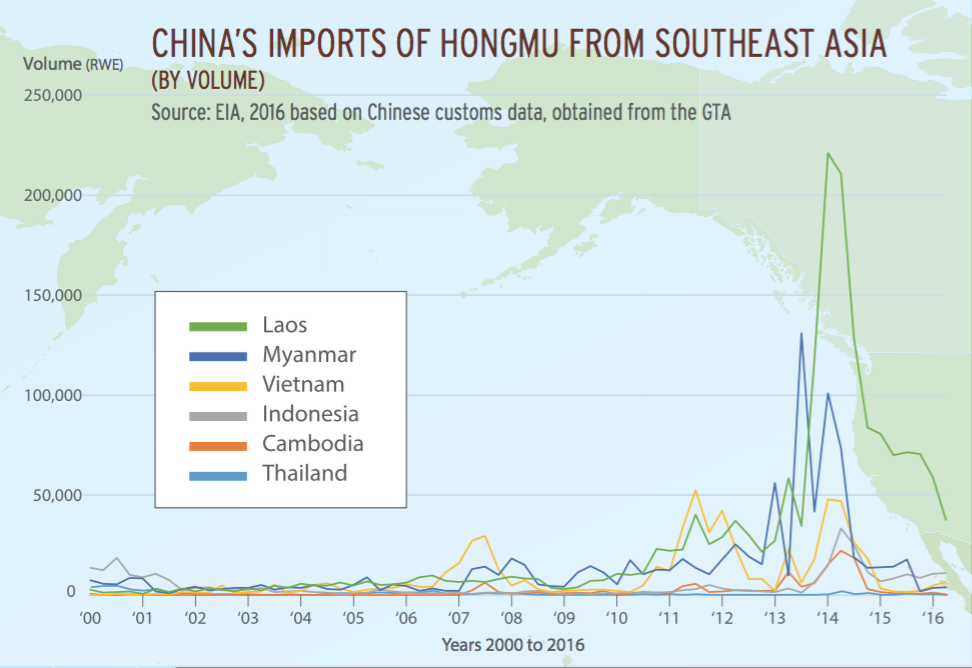
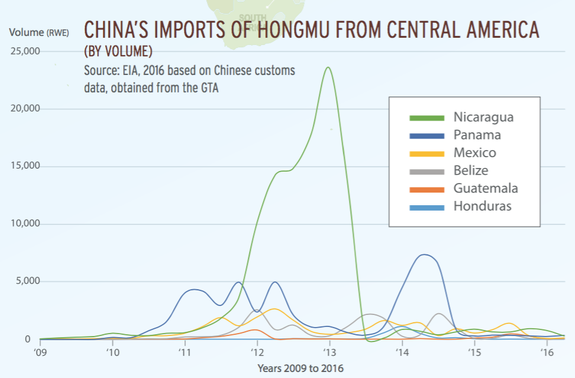
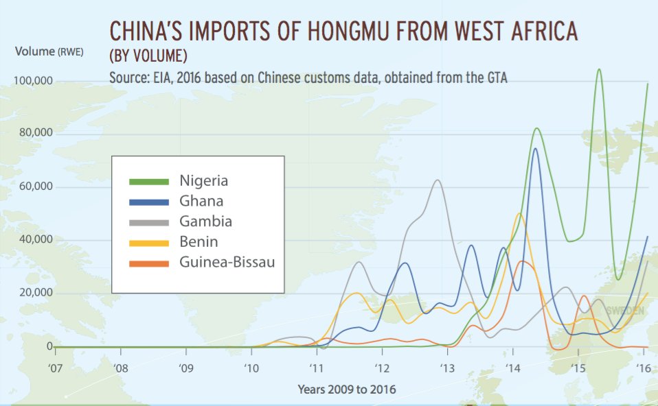

The hongmu industry has expanded massively over the past decade. Hongmu log imports into China have increased by 1,300% from 2009 to 2014, accounting on average for 10% of Chinese log imports by value from 2009 to 2015. China’s hongmu industry is composed of 30,000 companies generating domestic retail revenues of over USD 25 billion, and has bene ted from generous government incentives.
Because most hongmu species are not protected under CITES, and because the main demand-side country, China, and key trade and processing hub Vietnam, do not prohibit the import of illegally harvested and/or traded timber, illegal wood from these species is legally placed in the markets there everyday.
Soaring demand for scarce hongmu resources has caused supply chains to expand from Southeast Asia to new frontiers in West Africa and Central America.
Scroll down to read stories about rosewood suppliers.
Now the main South-East Asian hongmu species targeted are Padauk and Burmese Rosewood, with Laos and Myanmar providing most of the supply. Both species urgently need CITES protection.

Although the reported volume from Central America is relatively small, the region has Dalbergia species with very limited distributions that are particularly vulnerable to commercial extinction. Since the CITES listings of the ve regional species and major crackdowns, the “Chinese controlled wood mafia” have diversified their smuggling routes. Cocaine traffickers affected by declining revenues have been attracted by the high returns and money laundering opportunities that rosewood trade offers.
Misdeclarations of CITES listed hongmu as non-listed lookalike species, forgery of export permits and the collaboration of corrupt of cials have multiplied in recent months in Guatemala.

Hongmu exports from West Africa have grown more than 1,000 fold between 2010 and 2015. West Africa is now the world’s leading hongmu-producing region by volume. The main species is Pterocarpus erinaceus, known as “Kosso,” found in the dry forests
of West Africa, where the unsustainable harvest increases the risk of desertication. In Senegal’s Casamance region, the rosewood trade has fueled rebel activities through the smuggling of Kosso to neighboring Gambia.
